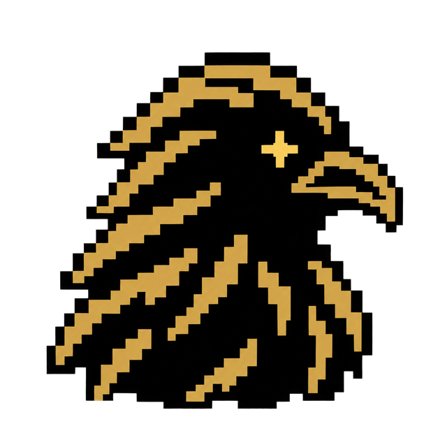

Sobre o Ozymandias
Ozymandias — Mercados e Impérios é uma publicação independente de Pedro Marcos, estudante de Engenharia de Software na Universidade Federal do Ceará, no campus de Russas. O projeto nasceu de sua curiosidade pelo mercado financeiro e do desejo de tornar o estudo da economia e dos investimentos acessível a mais pessoas.

Análises
Nesta seção, Pedro apresenta sua visão sobre empresas e acontecimentos que movimentam a economia e o mercado financeiro. A análise de dados e as ferramentas de inteligência artificial apoiam a investigação. Cabe ao autor interpretar as evidências, considerar os riscos e explicar como chegou às suas conclusões.
Conceitos
Esta seção reúne textos didáticos para quem quer entender como o câmbio funciona, o que um balanço patrimonial revela ou como interpretar um indicador financeiro. As explicações se apoiam em fatos e trazem referências para que o leitor possa conferir as informações e aprofundar o estudo por conta própria. As opiniões do autor ficam na seção Análises.